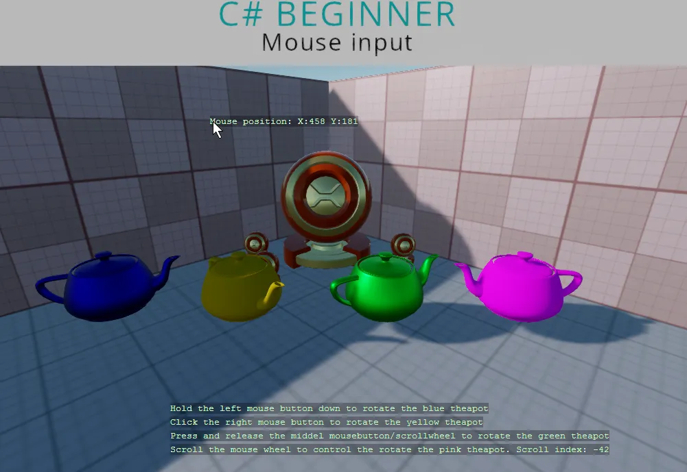

Mouse input
You can find this sample in the tutorial project: Menu → Mouse input
Explanation
This C# Beginner tutorial covers how to handle mouse input.
We can check for the existence of a mouse and then we can use various methods to check if a mouse buttons are clicked, held down or released.
We can also check for the mouse wheel (middle mouse) being clicked. We can use the mouse wheel delta to determine if the mouse wheel has been scrolled in a frame.
And finally we learn how to use the absolute mouse position to draw text at the position of the mouse on the screen.

Code
using Stride.Core.Mathematics;
using Stride.Engine;
using Stride.Input;
namespace CSharpBeginner.Code
{
/// <summary>
/// This script demonstrates how to check for any mouse input.
/// <para>
/// https://doc.stride3d.net/latest/en/tutorials/csharpbeginner/mouse-input.html
/// </para>
/// </summary>
public class MouseInputDemo : SyncScript
{
public Entity BlueTeapot;
public Entity YellowTeapot;
public Entity GreenTeapot;
public Entity PinkTeapot;
private float currentScrollIndex = 0;
public override void Start() { }
public override void Update()
{
// First lets check if we have a mouse.
if (Input.HasMouse)
{
// Key down is used for when a key is being held down.
DebugText.Print("Hold the left mouse button down to rotate the blue teapot", new Int2(400, 600));
if (Input.IsMouseButtonDown(MouseButton.Left))
{
var deltaTime = (float)Game.UpdateTime.Elapsed.TotalSeconds;
BlueTeapot.Transform.Rotation *= Quaternion.RotationY(0.4f * deltaTime);
}
// Use 'IsMouseButtonPressed' for a single mouse click event.
DebugText.Print("Click the right mouse button to rotate the yellow teapot", new Int2(400, 620));
if (Input.IsMouseButtonPressed(MouseButton.Right))
{
YellowTeapot.Transform.Rotation *= Quaternion.RotationY(-0.4f);
}
// 'IsMouseButtonReleased' is used for when you want to know when a mouse button is released after being either held down or pressed.
DebugText.Print("Press and release the scrollwheel to rotate the green teapot", new Int2(400, 640));
if (Input.IsMouseButtonReleased(MouseButton.Middle))
{
GreenTeapot.Transform.Rotation *= Quaternion.RotationY(0.4f);
}
// We can use the mousewheel delta do determine if a mousewheel has rotated.
// Scrolling forward gives a mousewheel delta of 1, and scrolling backwards gives a mousewheel delta of -1.
// If in the next frame the mousewheel is not scrolled, the mouse wheel delta is 0 again.
currentScrollIndex += Input.MouseWheelDelta;
DebugText.Print("Scroll the mouse wheel to rotate the pink teapot. Scroll index: " + currentScrollIndex, new Int2(400, 660));
PinkTeapot.Transform.Rotation = Quaternion.RotationY(0.02f * currentScrollIndex);
// We can draw some text at the position of our mouse by getting the absolute mouse position
var mousePos = Input.AbsoluteMousePosition;
DebugText.Print("Mouse position: " + mousePos, new Int2(mousePos));
}
}
}
}